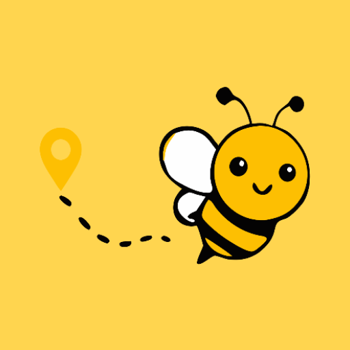

NearBe
Never forget a place again.
Drop a pin on the map for any place you want to remember. Next time you're nearby, NearBe sends you a notification — even if the app is closed.
Or pick a type of place, like a vintage shop or a café, and NearBe will quietly watch the area as you move around and let you know when one is close.